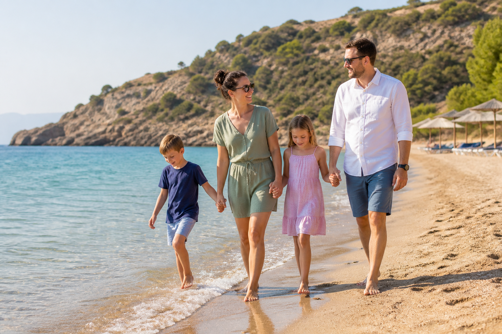
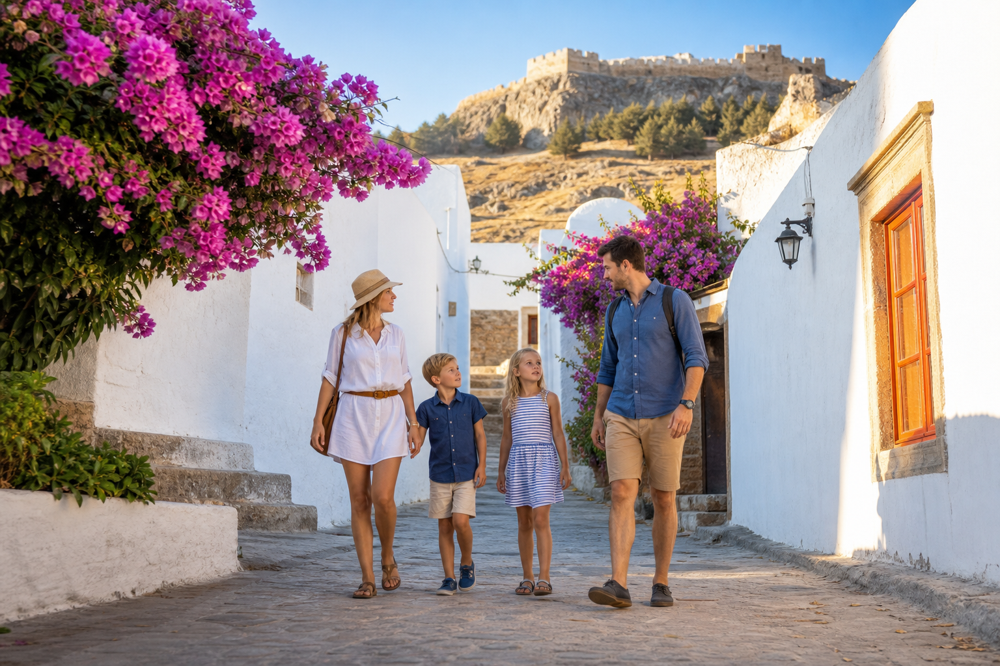

Řecko s dětmi
Rhodos s dětmi: naše dovolená, pláže a výlety + MAPA
Rhodos jsme původně brali jako takovou jistotu na moře. Letět relativně krátce, mít teplo, pláž a na týden vypnout. Jenže nakonec nás bavil mnohem víc, než jsme čekali. S manželem a dětmi jsme střídali klidné koupání, malé výlety autem a místa, kde se dá projít bez toho, aby děti po deseti minutách hlásily, že už je to nudný. Za mě je Rhodos super pro rodinu, která chce moře, ale nechce celý týden jen sedět u hotelového bazénu.

Proč jsme vybrali zrovna Rhodos
Potřebovali jsme dovolenou, kde se nebude pořád řešit, co podniknout, když se někomu nechce do vody. Rhodos je velký ostrov, ale není tak velký, aby se z každého výletu stal celodenní přejezd. Má pláže, Lindos, staré město Rhodos, menší vesnice i kopce. Oficiální turistický web zmiňuje středověké město Rhodos jako památku UNESCO i Lindos s akropolí, takže to nejsou jen naše dojmy z instagramu. Aktuální tipy a provoz míst si před cestou koukněte na Visit Rhodes.
Letenky na Rhodos a jak jsme letěli
My jsme letěli z Prahy přímo na letiště Rhodos Diagoras. [OVĚŘIT: dopravce, termín, přesná cena za rodinu a čas odletu.] Přímý let je s dětmi úplně jiná disciplína než přestup. Na letiště jsme jeli s předstihem, dali jsme si něco malého k jídlu a dětem jsme do batůžku přibalili omalovánky, pití po kontrole a jednu malou novinku na cestu. Nic světoborného, ale u nás to funguje líp než se snažit je dvě hodiny přesvědčovat, aby jen koukaly z okýnka.
Pozor na: Přesnou cenu letenek i aktuální spoj si vždy ověřte před rezervací. U letů na řecké ostrovy dělá obrovský rozdíl termín, prázdniny i jestli berete zavazadlo navíc.
Ubytování na Rhodosu: kde bych bydlela s dětmi
My jsme hledali hlavně klidnější základnu blízko pláže, ne hotel, ze kterého je všechno daleko. [OVĚŘIT: skutečné místo ubytování, počet nocí a cena.] S dětmi je za mě lepší mít apartmán nebo hotel, kde si zvládnete ráno udělat jednoduchou snídani, usušit plavky a večer nemusíte řešit každý hladový záchvat hned v restauraci. Ubytování na Rhodosu bych hledala podle toho, jestli chcete víc jezdit po ostrově, nebo být hlavně u moře.
Na výběr ubytování se můžete podívat přes Stay22 / Booking. My bychom u rodiny filtrovali balkon nebo terasu, klimatizaci, parkování a reálnou vzdálenost od pláže, ne jen hezké fotky bazénu. A mrkněte na poslední recenze, hlavně jestli někdo nezmiňuje hluk, hodně schodů nebo malou koupelnu. To jsou přesně ty věci, které člověk s dětmi pozná první večer.
Auto na Rhodosu: za nás se fakt hodilo
Auto jsme si na Rhodosu půjčili hned po příletu. [OVĚŘIT: konkrétní autopůjčovna, typ auta, cena a pojištění.] Bez auta by se dovolená zvládla taky, ale my jsme nechtěli každý den řešit autobusy a přesné časy. Chtěli jsme ráno popadnout ručníky, děti, svačinu a jet tam, kam se nám zrovna chtělo. Hlavně u pláží a menších zastávek je ta volnost úplně k nezaplacení.
Auto si můžete porovnat a rezervovat přes Discover Cars. My bychom hlídali hlavně podmínky pojištění, velikost kufru a dětské sedačky. Řecké silnice mimo hlavní tahy umí být užší, místy se parkuje dost po svém a ve vedru nechcete zjistit, že do auta nenacpete kočárek, tašky a ještě tři nafukovačky.
Pláže na Rhodosu s dětmi
My jsme nehledali jednu dokonalou pláž na celý týden. S dětmi nás bavilo střídat místa, ale nepřepálit to. Jednou jsme dali jen moře kousek od ubytování, jindy jsme vyjeli na pláž, kde bylo víc prostoru a klidnější voda. Na Rhodosu je dobré koukat nejen na fotky pláže, ale i na vstup do vody, vítr, stín a kde necháte auto. Tohle je přesně detail, který na hezké fotce obvykle nevidíte.
Lindos a koupání pod akropolí
Lindos je turistický, to vám nebudu tvrdit jinak. Ale když tam přijedete ráno, než se vedro a davy rozjedou naplno, má to fakt atmosféru. Jsou tam dvě písčité pláže a podle oficiálního průvodce je menší Pallas Beach obvykle klidnější. My bychom si dali ráno krátkou procházku bílými uličkami, koupání a pak pryč dřív, než začne být všem horko a protivno. S malými dětmi bych nahoru na akropoli nebrala nic zbytečného, jen vodu, čepici a fakt pohodlné boty.

Co vidět na Rhodosu, když nechcete děti uhnat
Staré město Rhodos
Do starého města jsme nešli s plánem projít úplně všechno. Děti to samozřejmě nebaví tak dlouho jako nás, ale úzké uličky, kamenné brány a hledání místa na zmrzlinu fungovalo dobře. My bychom vyrazili spíš dopoledne nebo až podvečer. Přes poledne je tam horko a člověk se motá mezi lidmi, což není ideální kombinace s dětmi a kočárkem. Středověké město je zapsané na seznamu UNESCO, ale i bez historické přednášky působí jako místo, kde děti chvíli baví samotné bloudění.
Lindos bez velkých očekávání
Lindos jsme si dali jako výlet na kratší dopoledne. Není potřeba se snažit stihnout uličky, pláž, akropoli, oběd i další pláž v jednom tahu. My jsme si vybrali dvě věci a zbytek nechali být. Vypadá to jako méně ambiciózní plán, ale domů jsme se vraceli bez hádek, což je na rodinné dovolené docela slušný výsledek.
Výlety a vstupenky
Když chcete přidat lodní výlet, organizovanou prohlídku nebo vstupenky, mrkněte na aktuální nabídku přes GetYourGuide. My bychom vybírali jen jeden placený výlet za dovolenou a vždycky podle věku dětí, času na lodi a storno podmínek. Konkrétní výlet ani cenu sem nedávám, protože bez aktuální nabídky by to bylo vymyšlené doporučení.
Jídlo, děti a řecký režim
My jsme se nesnažili každý večer najít nejlepší tavernu z celého ostrova. Někdy jsme dali normální večeři poblíž, někdy koupili pečivo, ovoce, jogurt a jedli na terase. S dětmi je za mě lepší mít rytmus, který funguje, než každý den hledat dokonalý podnik. A když se děti celý den koupou, mají hlad přesně v moment, kdy jste si mysleli, že ještě půl hodiny vydrží.
Do auta se nám osvědčila malá chladicí taška, pití navíc a něco slaného. Ve vedru není dobrý nápad spoléhat, že někde cestou stoprocentně najdete obchod nebo restauraci. A hlavně voda. Fakt hodně vody. [OVĚŘIT: jestli jste měli vlastní oblíbené podniky, jídla nebo konkrétní ceny, doplnit sem vlastní zkušenost.]
Co bychom na Rhodosu udělali stejně a co jinak
Stejně bychom si půjčili auto a nenechali se zlákat k tomu, že každý den musí být něčím výjimečný. Rhodos není ostrov, který musíte projet křížem krážem, aby vám dával smysl. Stačí si vybrat pár míst a mít čas se někde jen vykoupat. Příště bychom možná ještě víc hlídali ranní výjezdy, protože děti jsou po snídani nejvíc v pohodě a vedro se dá obejít aspoň částečně.
Prakticky na závěr
- Let: [OVĚŘIT: dopravce, termín, cenu a zavazadla.]
- Ubytování: vyberte podle pláže, klimatizace, parkování a reálné vzdálenosti, ne jen podle bazénu na fotce.
- Auto: s dětmi se hodí hlavně kvůli plážím a tomu, že můžete měnit plán podle vedra.
- Voda a slunce: čepice, pití, krém a pauza přes poledne jsou důležitější než další bod v itineráři.
- Lindos: vyrazte ráno, nechtějte stihnout všechno a počítejte s vedrem i lidmi.
- Ověřit před cestou: provoz památek, stav pláží, aktuální ceny, pojištění auta a konkrétní rezervace.
Za mě je Rhodos jedna z těch dovolených, kam můžete jet s dětmi, manželem a docela normálním očekáváním. Nebude všechno podle plánu, ale budete mít moře, dost možností na malé výlety a ostrov, který vás nebude nutit pořád někam spěchat. A to je někdy úplně nejvíc.